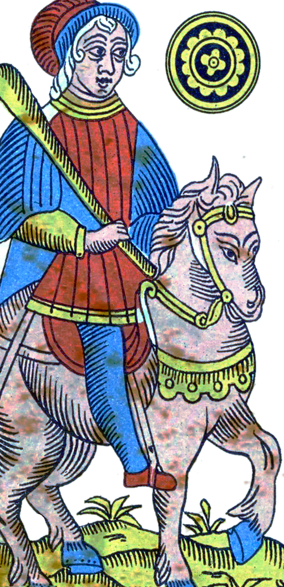
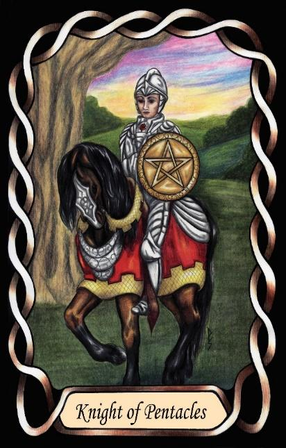

Knight of Pentacles
The Crafter (ISTP – TiSe)


Knight |
Concrete utilitarian |
||
Practical |
|||
Craftsman |
Introverted Thinking Extroverted Sensing |
||
5.4% of population |
|||
Example: Christian Bale, Tom Cruise |
|||
Meaning of Life: Independence. |
|||
Astrology: Capricorn |
|||
Knights of Pentacles are precise, self-reliant craftsmen who bring practical intelligence into the physical world. As ST Knights, they are grounded, concrete, and focused on what can be directly observed, handled, or built. Their introverted thinking gives them a cool, analytical inner core, allowing them to understand systems, mechanisms, and physical processes with exceptional clarity. They break things down to their functional components and rebuild them with improved efficiency.
Their extroverted sensing gives them excellent spatial awareness, coordination, and responsiveness. They learn by doing, by testing, by handling the world directly. This combination of Ti and Se makes them natural tool-users — individuals who intuitively understand how objects work, how forces interact, and how to manipulate the physical environment with precision and skill.
Placed in the Earth suit of Pentacles, their practical realism becomes directed toward craftsmanship, mechanics, and hands-on mastery. They are the artisans, technicians, and problem-solvers of the Pentacles domain — individuals who excel at tasks requiring accuracy, dexterity, and a deep understanding of physical detail. They thrive when working independently, following their own methods, and perfecting their craft without interference.
Knights of Pentacles notice details others overlook. They remember sequences, layouts, and physical patterns with remarkable accuracy. Their observational skill makes them effective in roles requiring vigilance, technical competence, or situational awareness. They are calm under pressure, steady in crisis, and capable of decisive action when needed.
At their core, they seek independence. Their meaning in life is found in doing their own thing — mastering skills, solving practical problems, and engaging directly with the physical world on their own terms. They are the Craftsmen of the Pentacles suit: self-sufficient, capable, and quietly competent, bringing order and precision to everything they touch.